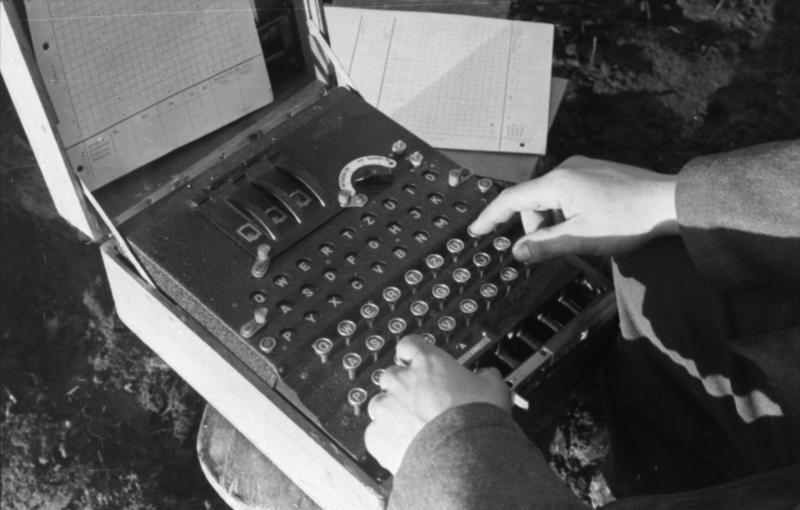
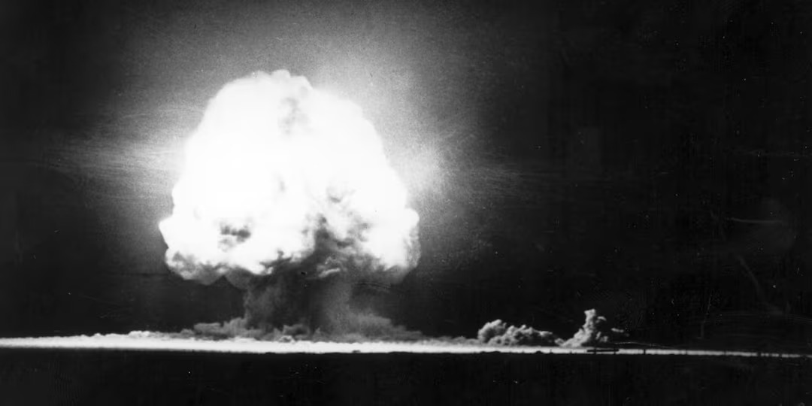

Project Overview
My project is about the applications of Mathematics and the advancements in technology that had a great influence on World War II. A lot of World War II is popularized due to the brutality of the Axis Powers with a lot of focus on the Holocaust and also the different combat tactics and weapons which lead to the Geneva Convention, but there were a lot of other important discoveries made that are overshadowed. I want to look at what was overshadowed and see how it played a major role in leading the Allied Powers winning the war.

Source: https://creativecommons.org/licenses/by-sa/3.0/de/deed.en
What I Knew at the Start
I have always loved the learning about the history war with a particular interest in World War II. I know a lot about the vehicles and the weapons used. I didn't know almost anything about the planning and technology used. I have also loved to learn about math and technology which is why I am a Computer Science major, so I thought it would be interesting to learn about the math and technology side of World War II.
What I Learned
I learned that that many things that came about during World World II due to mathematics and advancements in technology helped a great deal to Allied Powers. Much of what was invented and discovered from these advancements are still very relevant to this day and if it wasn't for the war none of these dicoveries or inventions would be as advance as they are now.

Conclusion
In conclusion, despite the burtality and questionable actions taken during World War II, I found that there was some great discoveries which lead to advancements in both mathamatics and technology that are still very relevant to this day.